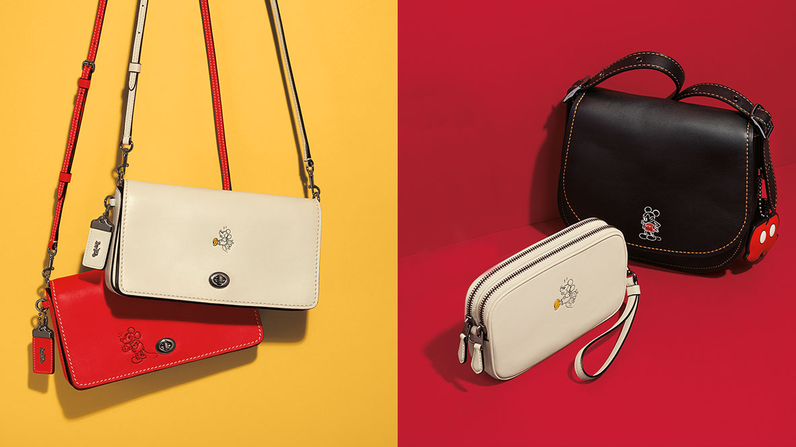

COACH
A legacy In Leather
| STEP 1: raw hides | All leathers begin as raw hides. We buy ours from 10 core tanneries we’ve chosen for their quality, consistency, and capability to make the range of colors and finishes we want. They must also meet our environmental standards—the highest in the industry. |
|---|---|
| STEP 2: tanning | The next step is tanning, which preserves the leather. Chrome tanning creates a more supple leather that can take a broad range of Coach colors. Vegetable tanning produces a brown-colored leather that cannot become a pastel or take clear, bright hues. |
| STEP 3: splitting: | After the leather has been tanned, it’s graded and split. Only top-grade leathers are selected for Coach. They are then thinned to a desired thickness for drape and a lighter weight. The top layer of the leather has the highest value, as it preserves the natural grain. |
| STEP 4: retanning | During this stage, retanning agents determine the “body” and allow deep dye penetration. A custom mix of dyes is added to create a specific Coach color while ensuring complete saturation. Oils are also added to lubricate the leather fibers and impart softness. |
| STEP 5: drying | The way leather is dried determines how supple it will be. It can be “toggle-dried” for a loose, open grain and a soft textured feel, or flattened with a hot plate to create a smoother, firmer leather. |
| STEP 6: finishing | The final look and feel of a Coach leather is created through several stages of finishing, including spray finishing for color and surface feel, ironing for sheen, embossing for texture, and tumbling—also known as “milling”—to slightly soften or thoroughly pebble the leather. |
| STEP 7: final inspection | Finished leathers are inspected according to extremely rigorous Coach standards for quality and durability. After a final grading, they’re sent to us to be made into Coach products. |